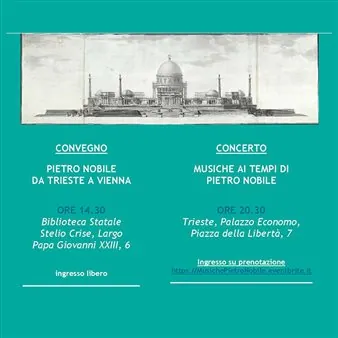

gio 12 nov
Doppio appuntamento per Pietro Nobile
A 250 anni dalla nascita di Pietro Nobile, avvenuta nel Canton Ticino il 10 ottobre 1776, l’architetto viene ricordato grazie a un doppio appuntamento: un convegno, che avrà luogo presso la Biblioteca Statale Stelio Crise e che presenterà una riflessione sulle nuove ricerche…
 Indicazioni
Indicazioni
- Costi e prenotazioni
- Costo non indicato · Prenotazione non indicata
- Programma
- Programma da verificare. Apri la fonte ufficiale per orari e possibili aggiornamenti.
- In caso di maltempo
- Nessuna indicazione specifica pubblicata.
- Note
- Acquisito automaticamente dalla fonte.
L’EVENTO
Descrizione completa
A 250 anni dalla nascita di Pietro Nobile , avvenuta nel Canton Ticino il 10 ottobre 1776, l’architetto viene ricordato grazie a un doppio appuntamento : un convegno , che avrà luogo presso la Biblioteca Statale Stelio Crise e che presenterà una riflessione sulle nuove ricerche intorno alla figura dell’architetto, e un concerto , realizzato in collaborazione con il Conservatorio “Giuseppe Tartini”, che proporrà un repertorio di musiche in relazione al periodo storico in cui Pietro Nobile visse. CONVEGNO
Pietro Nobile da Trieste a Vienna
Biblioteca Statale Stelio Crise, Largo Papa Giovanni XXIII, 6
ORE 14.30
Ingresso libero
In questa importante occasione, nel Convegno di studi curato dalla Soprintendenza Archeologia, Belle Arti e Paesaggio per il Friuli Venezia Giulia assieme alla Società di Minerva , in collaborazione con il Circolo svizzero di Trieste , saranno presentati una serie di interventi frutto di nuove ricerche destinate a dare nuova luce alla figura di Nobile, iniziatore e promotore della trasformazione in senso neoclassico dell’architettura mitteleuropea all’inizio dell’Ottocento tra Trieste e Vienna . La molteplicità delle esperienze di studio a Roma e la pluralità degli incarichi svolti – come progettista, insegnante e amministratore pubblico – rendono la sua personalità particolarmente interessante e attuale nel panorama artistico dell’area dell’ex Impero austro-ungarico.
CONCERTO
Musiche ai tempi di Pietro Nobile
Trieste, Palazzo Economo, Piazza della Libertà, 7
Concerto a cura degli allievi del Conservatorio “Giuseppe Tartini” di Trieste
ORE 20.30-22.00
Ingresso su prenotazione https://MusichePietroNobile.eventbrite.it
Capienza massima: 30 posti Grazie alla collaborazione con il Conservatorio di Musica “Giuseppe Tartini” è stato possibile ideare un Concerto con una proposta musicale incentrata sul repertorio compreso tra la fine del Settecento e la prima metà dell’Ottocento , in perfetta sintonia con l’epoca in cui visse e operò l’architetto Pietro Nobile. Il programma comprenderà musiche di Johann Kaspar Mertz (Presburgo, 1806 – Vienna, 1856), chitarrista e compositore di origine slovacca attivo soprattutto nella capitale asburgica; di Mauro Giuliani (Bisceglie, 1781 – Napoli, 1829), tra i massimi virtuosi della chitarra dell’età romantica, protagonista della vita musicale viennese tra il 1806 e il 1819 e in rapporto con personalità quali Beethoven e Hummel; di Ferdinando Carulli (Napoli, 1770 – Parigi, 1841), uno dei più celebri chitarristi e compositori italiani tra Sette e Ottocento; e di Matteo Bevilacqua (Trapani, 1768 – Rodi Garganico, 1821), figura eclettica del primo Ottocento, clarinettista, chitarrista, compositore, poeta e traduttore, che tra il 1788 e il 1801 ricoprì il ruolo di primo clarinetto presso il Teatro di Trieste. A completare il percorso musicale saranno le opere di Niccolò Paganini (Genova, 1782 – Nizza, 1840), tra i più celebri violinisti, chitarristi e compositori del Romanticismo europeo.
IL PROGRAMMA
Programma e orari
Appuntamenti raccolti dalle fonti elencate. Dove manca un orario, non è ancora disponibile in questa scheda.
Programma pubblicato
- ORE 14.30
- ORE 20.30-22.00
INFORMAZIONI UTILI
Prima di partire
- Controllare la fonte prima di partire.
ORGANIZZAZIONE